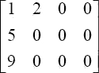
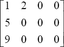

首页 > 编程笔记
二维数组的定义、初始化和输出，C语言二维数组详解
本节学习二维数组。二维数组与一维数组相似，但是用法上要比一维数组复杂一点。后面的编程中，二维数组用得很少，因为二维数组的本质就是一维数组，只不过形式上是二维的。能用二维数组解决的问题用一维数组也能解决。但是在某些情况下，比如矩阵，对于程序员来说使用二维数组会更形象直观，但对于计算机而言与一维数组是一样的。
与一维数组一样，行序号和列序号的下标都是从 0 开始的。元素 a[i][j] 表示第 i+1 行、第 j+1 列的元素。数组 int a[m][n] 最大范围处的元素是 a[m–1][n–1]。所以在引用数组元素时应该注意，下标值应在定义的数组大小的范围内。
此外，与一维数组一样，定义数组时用到的“数组名[常量表达式][常量表达式]”和引用数组元素时用到的“数组名[下标][下标]”是有区别的。前者是定义一个数组，以及该数组的维数和各维的大小。而后者仅仅是元素的下标，像坐标一样，对应一个具体的元素。
C 语言对二维数组采用这样的定义方式，使得二维数组可被看作一种特殊的一维数组，即它的元素为一维数组。比如“int a[3][4]；”可以看作有三个元素，每个元素都为一个长度为 4 的一维数组。而且 a[0]、a[2]、a[3] 分别是这三个一维数组的数组名。下面来验证一下看看是不是这么回事儿：
16
可见 a[0] 确实是第一行一维数组的数组名，其他同理。
在 C 语言中，二维数组中元素排列的顺序是按行存放的，即在内存中先顺序存放第一行的元素，再存放第二行的元素，这样依次存放。
1) 分行给二维数组赋初值，比如上面程序的赋值方法：
2) 也可以将所有数据写在一个花括号内，按数组排列的顺序对各元素赋初值。比如：
3) 也可以只对部分元素赋初值。比如：

4) 如果在定义数组时就对全部元素赋初值，即完全初始化，则第一维的长度可以不指定，但第二维的长度不能省。比如：
5) int a[3][4]={0}；
二维数组“清零”，里面每一个元素都是零。
1 2 3 4
5 6 7 8
9 10 11 12
提示：“printf（"%-2d\x20"，a[i][j]）；”中的“%-2d”，其中“-”表示左对齐，如果不写“-”则默认表示右对齐；“2”表示这个元素输出时占两个空格的空间，所以连同后面的 \x20 则每个元素输出时都占三个空格的空间。
二维数组的定义
二维数组定义的一般形式为：类型说明符 数组名[ 常量表达式][ 常量表达式];
比如：int a[3][4];表示定义了一个 3×4，即 3 行 4 列总共有 12 个元素的数组 a。这 12 个元素的名字依次是：a[0][0]、a[0][1]、a[0][2]、a[0][3]；a[1][0]、a[1][1]、a[1][2]、a[1][3]；a[2][0]、a[2][1]、a[2][2]、a[2][3]。
与一维数组一样，行序号和列序号的下标都是从 0 开始的。元素 a[i][j] 表示第 i+1 行、第 j+1 列的元素。数组 int a[m][n] 最大范围处的元素是 a[m–1][n–1]。所以在引用数组元素时应该注意，下标值应在定义的数组大小的范围内。
此外，与一维数组一样，定义数组时用到的“数组名[常量表达式][常量表达式]”和引用数组元素时用到的“数组名[下标][下标]”是有区别的。前者是定义一个数组，以及该数组的维数和各维的大小。而后者仅仅是元素的下标，像坐标一样，对应一个具体的元素。
C 语言对二维数组采用这样的定义方式，使得二维数组可被看作一种特殊的一维数组，即它的元素为一维数组。比如“int a[3][4]；”可以看作有三个元素，每个元素都为一个长度为 4 的一维数组。而且 a[0]、a[2]、a[3] 分别是这三个一维数组的数组名。下面来验证一下看看是不是这么回事儿：
# include <stdio.h>
int main(void)
{
int a[3][4] = {{1, 2, 3, 4}, {5, 6, 7, 8}, {9, 10, 11, 12}};
printf("%d\n", sizeof(a[0]));
return 0;
}
输出结果是：16
可见 a[0] 确实是第一行一维数组的数组名，其他同理。
在 C 语言中，二维数组中元素排列的顺序是按行存放的，即在内存中先顺序存放第一行的元素，再存放第二行的元素，这样依次存放。
二维数组的初始化
可以用下面的方法对二维数组进行初始化。1) 分行给二维数组赋初值，比如上面程序的赋值方法：
int a[3][4] = {{1, 2, 3, 4}, {5, 6, 7, 8}, {9, 10, 11, 12}};
这种赋初值的方法比较直观，将第一个花括号内的数据赋给第一行的元素、第二个花括号内的数据赋给第二行的元素……即每行看作一个元素，按行赋初值。2) 也可以将所有数据写在一个花括号内，按数组排列的顺序对各元素赋初值。比如：
int a[3][4] = {1, 2, 3, 4, 5, 6, 7, 8, 9, 10, 11, 12};
效果与第 1 种是一样的。但第1种方法更好，一行对一行，界限清楚。第 2 种方法如果数据多，写成一大片，容易遗漏，也不易检查。3) 也可以只对部分元素赋初值。比如：
int a[3][4] = {{1, 2}, {5}, {9}};
它的作用是对第一行的前两个元素赋值、第二行和第三行的第一个元素赋值。其余元素自动为 0。初始化后数组各元素为：

int a[3][4] = {1, 2, 3, 4, 5, 6, 7, 8, 9, 10, 11, 12};
等价于：
int a[][4] = {1, 2, 3, 4, 5, 6, 7, 8, 9, 10, 11, 12};
系统会根据数据总数和第二维的长度算出第一维的长度。但这种省略的写法几乎不用，因为可读性差。5) int a[3][4]={0}；
二维数组“清零”，里面每一个元素都是零。
二维数组如何输出
二维数组有行和列，那么如何输出里面的元素呢？在讲述一维数组的时候说过，“数组的元素只能一个一个输出”，二维数组也不例外。在一维数组中是用一个 for 循环进行输出，而二维数组元素的输出要使用两个 for 循环嵌套。
# include <stdio.h>
int main(void)
{
int a[3][4] = {{1, 2, 3, 4}, {5, 6, 7, 8}, {9, 10, 11, 12}};
int i; //行循环变量
int j; //列循环变量
for (i=0; i<3; ++i)
{
for (j=0; j<4; ++j)
{
printf("%-2d\x20", a[i][j]);
}
printf("\n");
}
return 0;
}
输出结果是：1 2 3 4
5 6 7 8
9 10 11 12
提示：“printf（"%-2d\x20"，a[i][j]）；”中的“%-2d”，其中“-”表示左对齐，如果不写“-”则默认表示右对齐；“2”表示这个元素输出时占两个空格的空间，所以连同后面的 \x20 则每个元素输出时都占三个空格的空间。
关注公众号「站长严长生」，在手机上阅读所有教程，随时随地都能学习。内含一款搜索神器，免费下载全网书籍和视频。

微信扫码关注公众号